Continuiamo l'esempio precedente inserendo sull'etichetta una variabile LOTTO un CODICE A BARRE Code 128. Questo tipo di codice a barre e' molto usato nell'ambito industriale logistico. Apriamo l'etichetta dell'esempio precedente e modifichiamo il formato aumentando le dimensioni. Per cambiare il formato, clicchiamo con il tasto destro del mouse in un punto bianco dell'area di lavoro e selezioniamo un formato piu' grande ad esempio il formato 90x90 che abbiamo realizzato in un capitolo precedente.
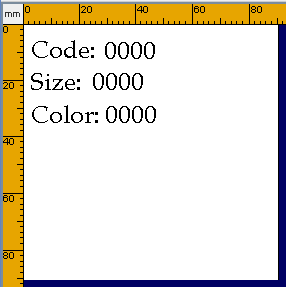
Supponiamo, che la variabile lotto, sia diversa da quelle introdotte precedentemente, perche' non contenuta nel database. Supponiamo di volerla inserire di volta in volta manualmente. Vuol dire che vogliamo scrivere, tale variabile, in una finestra, dopo aver selezionato il Codice del prodotto. LabelOne indica questo tipo di variabile, come proveniente da FINESTRA. Per inserire un tale tipo di variabile procediamo come nel capitolo precedente. Clicchiamo sul pulsante per inserire il testo e poi clicchiamo sull'area di lavoro nel punto in cui vogliamo inserire il testo "Batch:". 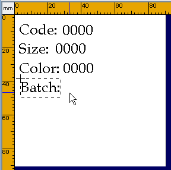 |
Ora aggiungiamo un nuovo testo che trasformeremo in "Variabile", Origine dati "Finestra". Per fare questo dopo aver inserito il testo "00000000" clicchiamo sul triangolino delle proprieta' "Variabile", e aggiungiamo una nuova variabile. Come si puo' vedere l'origine dati di default e' proprio "Finestra". 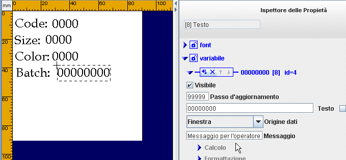 |
Possiamo cambiare il messaggio per l'operatore in "Inserire il lotto". 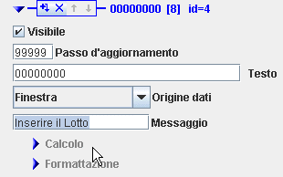 |
Aggiungiamo ora il Codice A Barre. Clicchiamo nella barra degli strumenti sul pulsante Codice a Barre 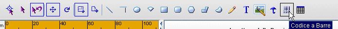 |
Poi posizioniamo il mouse sull'area di lavoro e clicchiamo per inserire il Codice. Il codice a barre verra' inserito con l'angolo in alto a sinistra nella posizione indicata dal mouse. Di default verra' inserito un EAN13.
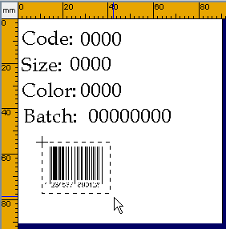 |
Andiamo nell'ispettore delle proprieta' con il codice a barre selezionato e apriamo le proprieta' del codice a barre cliccando sul triangolino relativo. 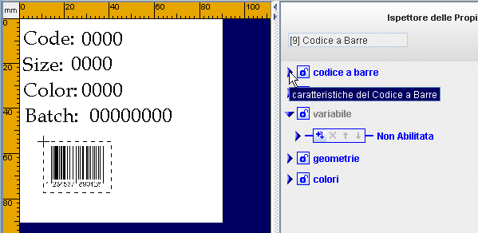 |
Fra le proprieta' troviamo il "Tipo di Codice a barre". Clicchiamo lateralmente alla finestra, per vedere la lista. 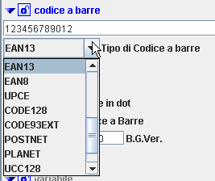 |
Quindi selezioniamo Code128. 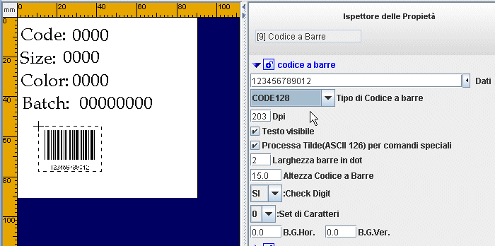 |
Ora dobbiamo inserire i dati nel Codice a barre. Se i dati fossero fissi, basterebbe scriverli nella finestra "Dati", ma nel nostro caso non sono fissi, perche' vogliamo inserire Code, Size, e Lotto. Per fare questo, chiudiamo le proprieta' codice a barre e apriamo quelle Variabile. Aggiungiamo una variabile e selezioniamo come origine dati FISSA. 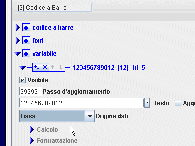 |
Per inserire le variabili code, size e lotto dobbiamo usare il concetto di VRIABILE LOCALE.
Le Variabili localiTutte le variabili usate in una determinata etichetta, sono variabili locali, nel senso che possono essere usate piu' volte, nella stessa etichetta, scrivendo: var(id) |
dove id e' un numero riportato nelle proprieta' delle variabili. Nel caso nostro Code ha id=1;, Size id=2, Batch id=4. Non e' detto che anche voi abbiate gli stessi valori, perche' se per qualche ragione inserite una variabile e poi la cancellate il valore di id si incrementa. Per questo motivo bisogna controllare nel vostro caso i valori di id cliccando prima sulla variabile code poi su quella size e poi su quella batch. Quindi bastera' scrivere nel Testo del Codice a Barre var(1)var(2)var(4) 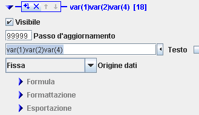 |
La versione Lite di LabelOne, consente di inserire al massimo 15 caratteri. Per inserirne di piu', bisogna usare la versione Studio. Per questa ragione, da questo momento in poi, in questo capitolo, ci riferiremo alla versione Studio.
Il codice a barre non e' ancora completo perche' mancano gli Application Identifier.
Application IdetifierSono spesso indicati con AI e sono dei codici che permettono di interpretare il contenuto dei codici 128. Per vedere una lista dei AI si puo' cliccare sul PULSANTE DELLE OPZIONI sulla destra della finestra di inserimento del testo. 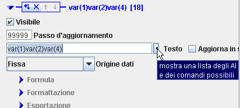 |
Nel nostro caso dovremo inserire 01 per la variabile code, 20 per la variabile size, e 10 per la variabile batch. Clicchiamo con il mouse nella finestra Testo, e posizioniamoci con il cursore all'inizio di var(1). Poi clicchiamo sul pulsante delle opzioni alla destra della finestra testo. 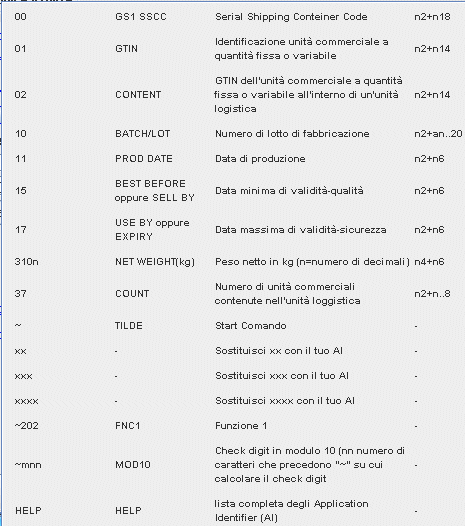 |
| Selezioniamo dalla lista l'AI "01".
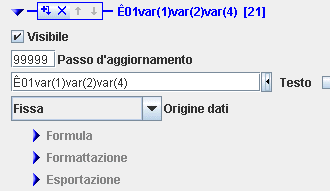 |
Ora aggiungiamo gli altri Application Identifier. Per AI=20 facciamo la stessa cosa, prima ci posizioniamo con il cursore davanti a var(2) poi clicchiamo sul pulsante delle opzioni e usiamo AI=xx, dopo sostituiamo xx con 20. Per AI=10, lo troviamo nella lista, bastera' selezionarlo. 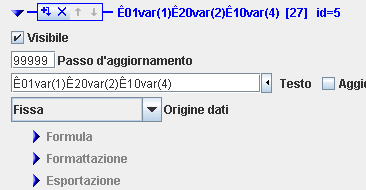 |
Ora possiamo correggere la posizione del codice a barre nell'area di lavoro e salvare l'etichetta. 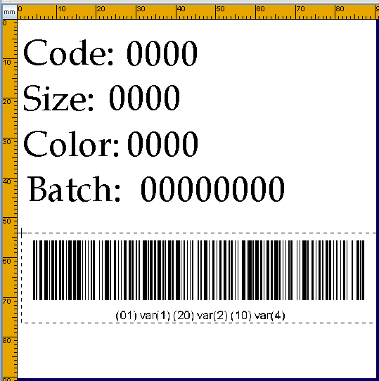 |
Quando stamperemo al posto di var(1) var(2) var(4) ci saranno i rispettivi valori.
Questa tecnica richiede la conoscenza delle regole assegnate agli Application Identifier. Infatti per ogni AI e' definito il tipo di dati (numerico o alfanumerico) la lunghezza massima e se tale lunghezza e' fissa o variabile. In alcuni casi e' presente un carattere di controllo finale. Nel caso di AI=01 infatti, la lunghezza e' fissa, il tipo di dati numerico e c'e' un carattere di controlla alla fine. Questo implica che il codice a barre cosi come lo abbiamo fatto, non rispetta tutte le regole. Ci sono altri fattori che complicano ulteriormente la cosa. Alcuni AI richiedono la presenza di altri AI.
Per semplificare tutto cio' LabelOne mette a disposizione l'Assistente EAN/UCC128.